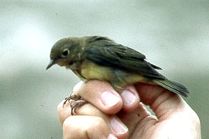

These photographs accompany records that have been recently submitted to the committee. This record has been ACCEPTED.

Connecticut Warbler
Oporornis agilis
24 Sep 96, Southeast Farallon Island, SF 1997-035
© 1996 Peter Pyle
Back to CBRC Rare Bird Photos